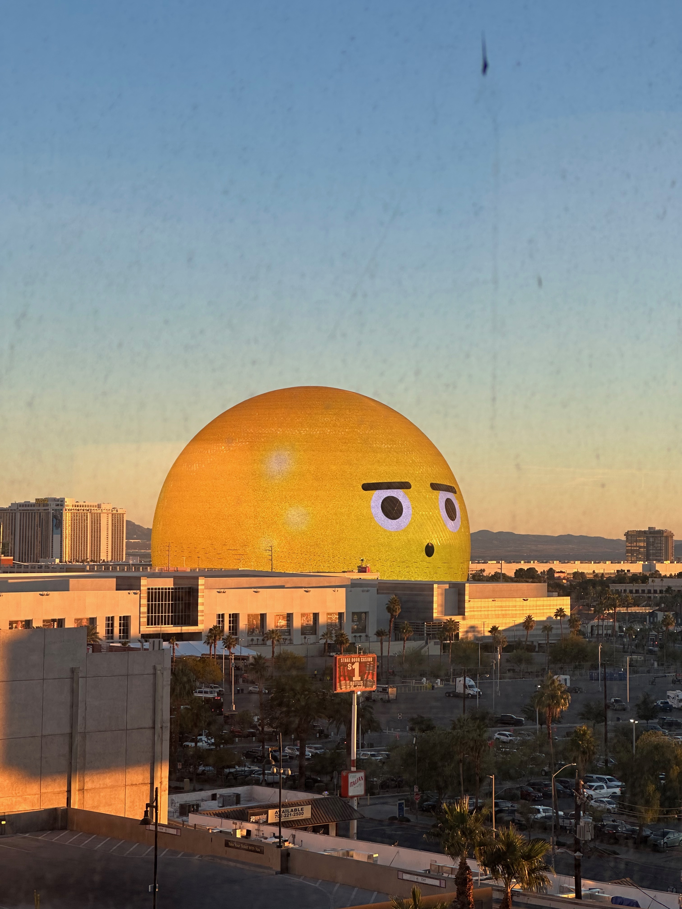
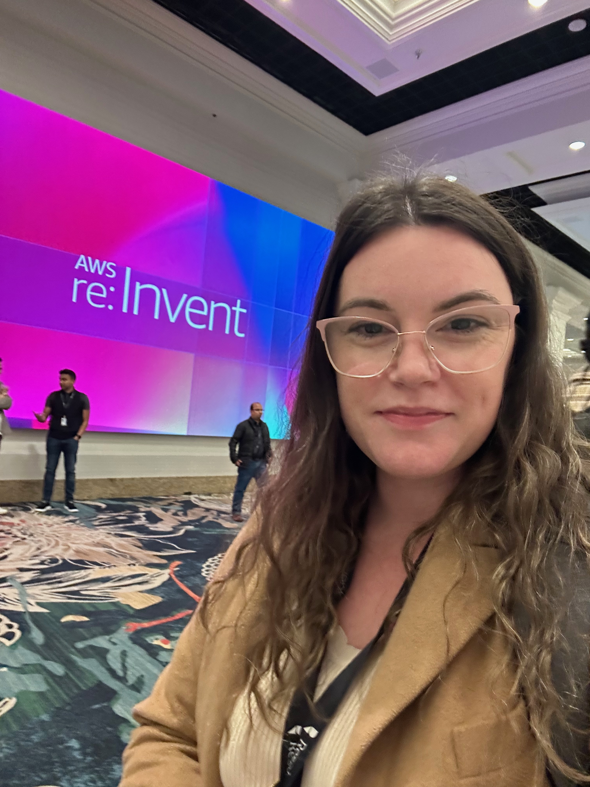
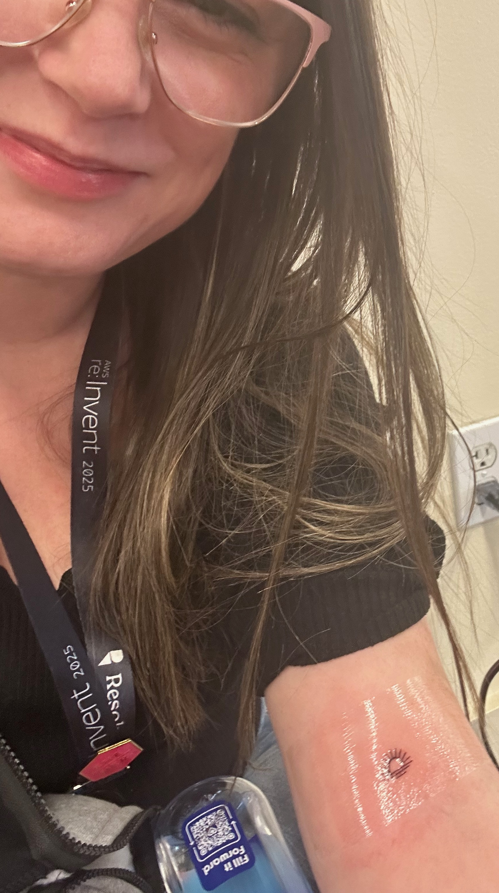
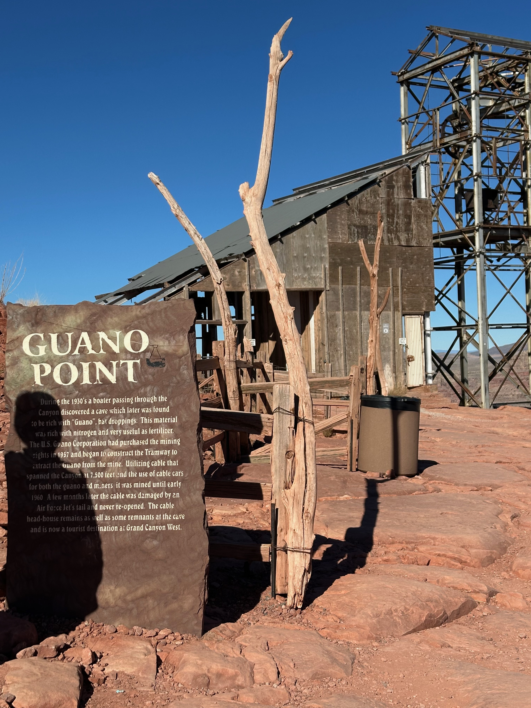
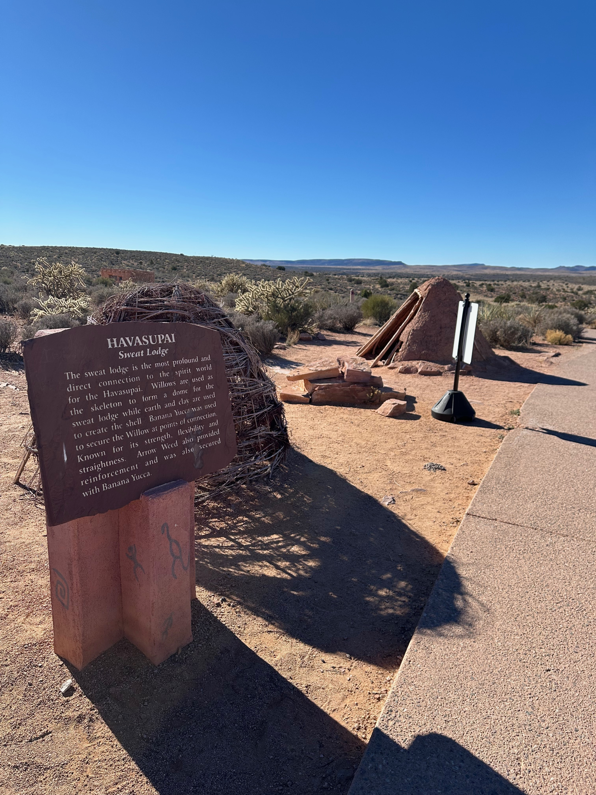
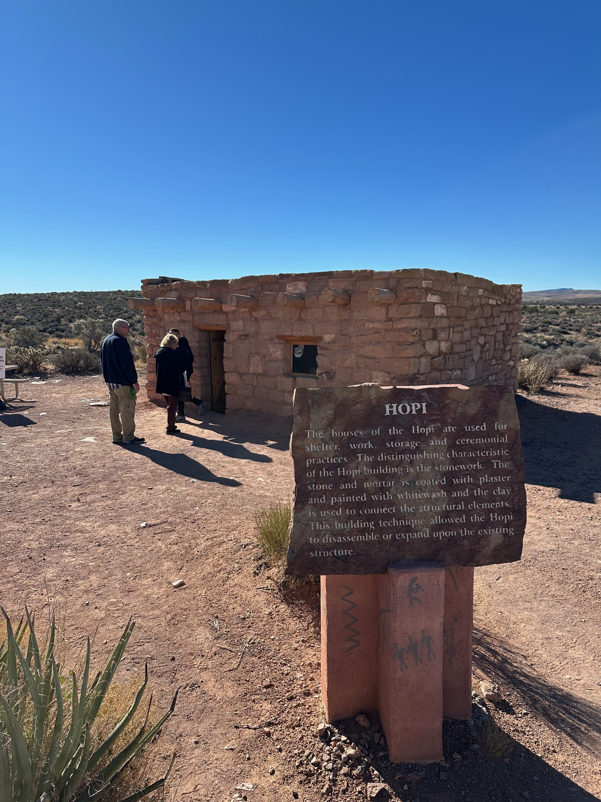
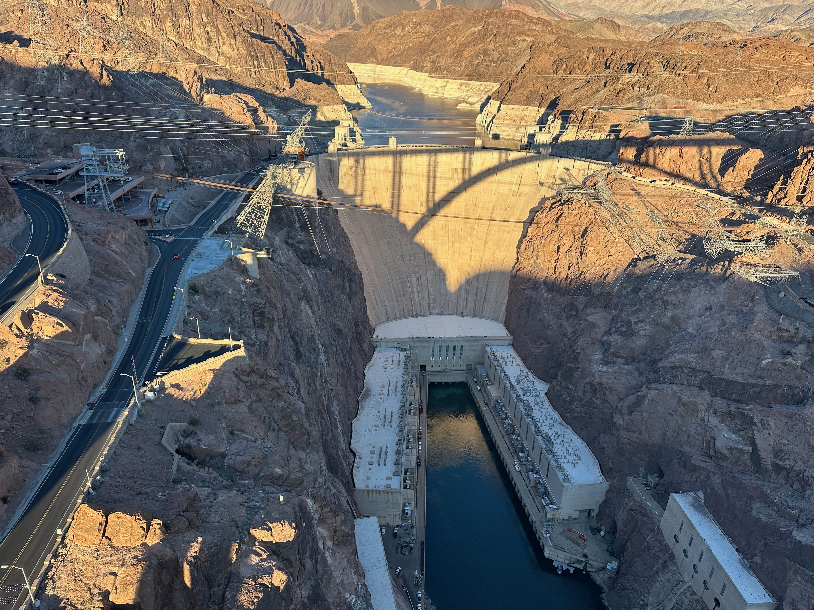
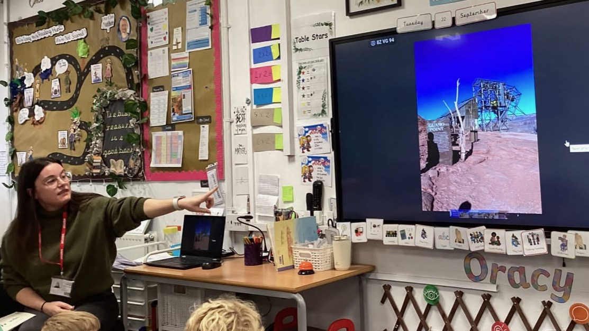

A week in Vegas: learning, lights and a tiny tattoo
Las Vegas was quite a setting for a week of learning. I was there for the AWS conference, with the Sphere glowing outside my bedroom window and Christmas trees dotted about in weather that really didn’t feel like Christmas.
I’m used to cold hands and several layers at that time of year, so the warmth took a bit of getting used to, as did having a giant glowing sphere where the usual hotel car park might be. By the time I came home, I had a head full of ideas, a proposed epic of work to bring to the team, plans for a workshop and my first ever tattoo. The tattoo is considerably smaller than the epic.

The session that came home with me
One of my highlights was a technical class where I got to try AWS Transform. I learnt loads. Having time to actually work through something makes such a difference for me; I want to have a go, ask questions and work out where it might fit into the things we do.
It gave me enough to bring a proposed epic back to my team at work, so we could trial it ourselves. There’s still work to do to see how it suits us, but I came away wanting to make space for that experiment. I was quite pleased to have something concrete to bring back alongside all the enthusiasm.
A "why aren’t we doing this?" moment
Learning about GitHub Copilot instruction files was another big takeaway. They were something my team wasn’t utilising, and I found myself thinking about all the context we have in our heads about how we work and how useful it would be to write some of it down.
When I got back, I organised and ran a workshop with developers from all disciplines on the team to create some together. I wanted everyone involved: we work on different things, and the instructions needed to reflect that.
I really enjoyed taking something I’d learnt in Vegas and turning it into a session where we could share our own knowledge. It also gave us a reason to talk about our ways of working, which is useful in itself.
Lambdas, Kiro and breakfast conversations
I also spent time learning more about AWS Lambda and Kiro. There was so much to take in, and plenty that I wanted to go back to once I’d had a chance to let it all settle. My curiosity was getting a very good workout.
But some of my favourite moments happened over breakfast. I loved meeting new people each morning, hearing what they worked on and finding out what they were excited to learn that day.
There’s something lovely about being surrounded by people who want to learn and are happy to share what they know. A conversation can send you off with a new question, or a session you hadn’t considered. That atmosphere was a huge part of what I enjoyed about the conference. I could happily get used to starting the day like that.

A very small act of bravery
Somewhere amongst all of this, I got my first ever tattoo.
It may be the smallest tattoo known to man. I am a tad fearful of needles, so I wasn’t exactly going to begin with a full sleeve. A very small tattoo felt like quite enough bravery for one trip, thank you.
Still, it counts. I went to an AWS conference and came back tattooed. Technically.

Taking the bus to somewhere much bigger
I also took a bus tour out to the Grand Canyon, visiting the western rim and Guano Point. After Vegas, it was quite a change of scenery. There’s so much going on in the city, and then you’re looking out across the canyon, trying to take in the sheer size of it.
Guano Point came with a particularly memorable bit of history: bat poo mining. The guano was collected for use as fertiliser, with an aerial tramway built to carry it across the canyon. When I told my daughter about that, she found it hilarious. Of all the things to learn about the Grand Canyon, of course that was the detail that landed.
Honestly, I can't blame her. You don’t hear "bat poo mining" every day.

The trip also left me wanting to learn more about the Native American peoples connected to the canyon, including the Hualapai, Havasupai and Hopi. Grand Canyon West is on the Hualapai Reservation, and the Native American Village at Eagle Point has examples of traditional housing, ovens and sweat lodges from different tribal traditions. There’s so much more to understand than the view alone.
One thing worth unpacking is that Havasupai and Hopi are names of peoples, rather than types of building. Traditional Havasupai shelters included dome-shaped brush dwellings: a framework of wooden poles covered with branches and other plant material. Hopi pueblo homes are quite different, with stone walls, flat roofs and rooms grouped together, sometimes in several storeys. Wooden beams support roofs layered with smaller branches, grasses and earth.


Those are examples of traditional architecture, rather than a picture of how everyone lives today. The Havasupai, Hopi and Hualapai are distinct, living communities, each with their own history and traditions. That felt like an important part of the story to take back into the classroom, alongside the scenery and the now-famous bat poo.
I also visited the Hoover Dam, which added another rather impressive bit of engineering to the trip. It comes with a story straight out of a spy film: in 1939, US officials received reports of an alleged German plot to bomb its intake towers and disrupt electricity supplies to aircraft factories in Los Angeles. The reported plan involved hiring a boat and pretending to go fishing. Thankfully, no attack took place, but it did lead to tighter security. Quite a bit more history than I’d expected from a stop to look at a dam.

Back home, I even gave a talk at my daughter’s school to share what I’d learnt about the Grand Canyon and those Native American communities. It was lovely to take that part of the trip into her classroom. I’d gone away to learn about technology and ended up sharing canyon stories with schoolchildren as well.

What I brought back
I’ve come home with things I want to try at work, a workshop we’ve already done together and plenty more to learn. I’m grateful for the people who shared their knowledge, whether they were leading a technical session or chatting over breakfast.
And I’ve got some rather good memories to go with it: the Sphere outside my window, Christmas trees in the warmth, a canyon that’s difficult to do justice to in words, and a tiny tattoo that required more courage than its size would suggest.
My daughter will probably remember the bat poo. I suspect I will too.